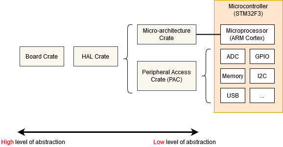

Отображенные в память регистры
Встраиваемые системы могут зайти только так далеко, выполняя обычный код на Rust и перемещая данные в оперативной памяти. Если мы хотим получать информацию в систему или из нее (будь то мигание светодиода, обнаружение нажатия кнопки или взаимодействие с внешним периферийным устройством по какой-либо шине), нам придется погрузиться в мир периферийных устройств и их "отображенных в память регистров".
Вы можете обнаружить, что код, необходимый для доступа к периферийным устройствам вашего микроконтроллера, уже написан на одном из следующих уровней:

- Крейт микроархитектуры — этот тип крейта предоставляет полезные процедуры, общие для ядра процессора, используемого вашим микроконтроллером, а также любые периферийные устройства, общие для всех микроконтроллеров, использующих этот тип ядра процессора. Например, крейт cortex-m предоставляет функции для включения и отключения прерываний, которые одинаковы для всех микроконтроллеров на базе Cortex-M. Он также предоставляет доступ к периферийному устройству 'SysTick', включенному во все микроконтроллеры на базе Cortex-M.
- Крейт доступа к периферийным устройствам (PAC) — этот тип крейта представляет собой тонкую обертку над различными отображенными в память регистрами, определенными для конкретного номера детали вашего микроконтроллера. Например, tm4c123x для серии Texas Instruments Tiva-C TM4C123 или stm32f30x для серии ST-Micro STM32F30x. Здесь вы будете взаимодействовать с регистрами напрямую, следуя инструкциям по эксплуатации каждого периферийного устройства, приведенным в техническом справочном руководстве вашего микроконтроллера.
- Крейт HAL — эти крейты предлагают более удобный API для вашего конкретного процессора, часто реализуя общие трейты, определенные в embedded-hal. Например, этот крейт может предлагать структуру
Serialс конструктором, который принимает подходящий набор пинов GPIO и скорость передачи данных, и предоставляет функциюwrite_byteдля отправки данных.
Давайте рассмотрим пример:
#![no_std]
#![no_main]
use panic_halt as _; // Обработчик паники
use cortex_m_rt::entry;
use tm4c123x_hal as hal;
use tm4c123x_hal::prelude::*;
use tm4c123x_hal::serial::{NewlineMode, Serial};
use tm4c123x_hal::sysctl;
#[entry]
fn main() -> ! {
let p = hal::Peripherals::take().unwrap();
let cp = hal::CorePeripherals::take().unwrap();
// Обертывание структуры SYSCTL в объект с API более высокого уровня
let mut sc = p.SYSCTL.constrain();
// Выбор настроек осциллятора
sc.clock_setup.oscillator = sysctl::Oscillator::Main(
sysctl::CrystalFrequency::_16mhz,
sysctl::SystemClock::UsePll(sysctl::PllOutputFrequency::_80_00mhz),
);
// Настройка PLL с этими параметрами
let clocks = sc.clock_setup.freeze();
// Обертывание структуры GPIO_PORTA в объект с API более высокого уровня.
// Обратите внимание, что требуется заимствование `sc.power_control` для автоматического включения питания периферийного устройства GPIO
let mut porta = p.GPIO_PORTA.split(&sc.power_control);
// Активация UART.
let uart = Serial::uart0(
p.UART0,
// Пин передачи
porta
.pa1
.into_af_push_pull::<hal::gpio::AF1>(&mut porta.control),
// Пин приема
porta
.pa0
.into_af_push_pull::<hal::gpio::AF1>(&mut porta.control),
// RTS или CTS не требуются
(),
(),
// Скорость передачи данных
115200_u32.bps(),
// Обработка вывода
NewlineMode::SwapLFtoCRLF,
// Нам нужны частоты часов для расчета делителей скорости передачи
&clocks,
// Это необходимо для включения питания периферийного устройства UART
&sc.power_control,
);
loop {
writeln!(uart, "Hello, World!\r\n").unwrap();
}
}